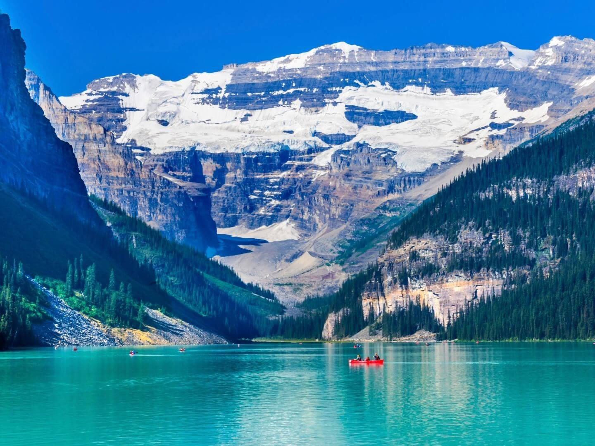

|  |
About Lake LouiseLake Louise is one of the most famous lakes in the Canadian Rockies, located in Banff National Park. The lake is known worldwide for its bright turquoise water, created by glacial rock flour reflecting the light. The view of the lake surrounded by high snowy mountains, the Victoria Glacier, and dense evergreen forests creates one of the most iconic natural landscapes in North America. It feels peaceful, cold, and unbelievably beautiful. |